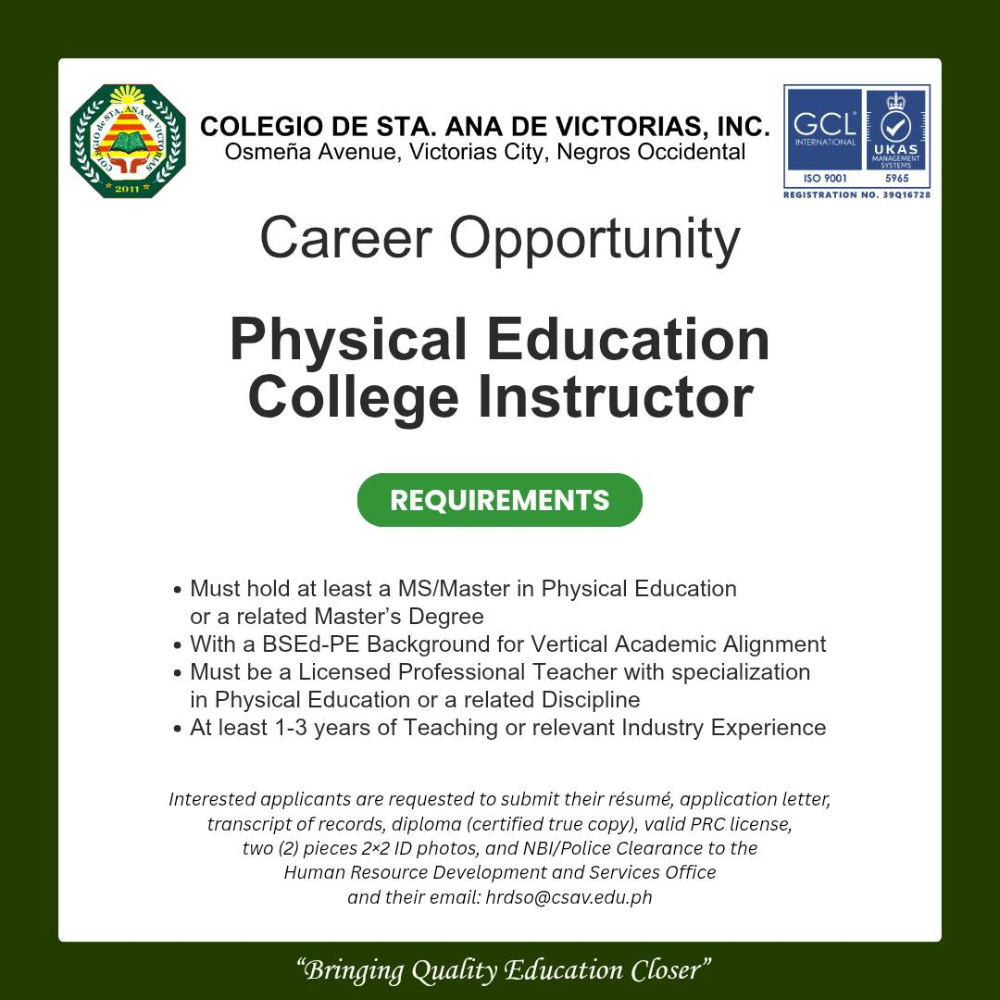

CSAV EDUCATION DEPARTMENT
We Touch The Future We teach
CASAV Education Department is dedicated to nurturing every student's potential. We believe in a hands-on approach to learning, where practical skills meet academic excellence to shape confident, capable leaders for tomorrow.
BE THE ONE OF US!!!
-
About us Colegio de Sta. Ana de Victorias "brings quality education closer" to the community. CSAV opens up a great opportunity for students who want to get a degree through the different courses it offers at affordable tuition fees, with the best instruction and a wholesome academic environment in the heart of Victorias City. -
𝐂𝐎𝐋𝐄𝐆𝐈𝐎 𝐃𝐄 𝐒𝐓𝐀. 𝐀𝐍𝐀 𝐃𝐄 𝐕𝐈𝐂𝐓𝐎𝐑𝐈𝐀𝐒, 𝐈𝐍𝐂. - 𝐀𝐃𝐌𝐈𝐒𝐒𝐈𝐎𝐍𝐒 𝐀.𝐘. 𝟐𝟎𝟐𝟔-𝟐𝟎𝟐𝟕 𝐀𝐑𝐄 𝐍𝐎𝐖 𝐎𝐏𝐄𝐍!
𝑺𝑻𝑬𝑷 1: 𝑹𝑬𝑺𝑬𝑹𝑽𝑬 𝒀𝑶𝑼𝑹 𝑺𝑳𝑶𝑻
Complete the ONLINE APPLICATION FORM (Scan the QR code or visit the link)
to secure your admission exam schedule. Link: https://forms.gle/UCKQXPww78fA5LGk6
𝑺𝑻𝑬𝑷 2: 𝑭𝑰𝑳𝑳 𝑶𝑼𝑻 𝑻𝑯𝑬 𝑭-18 𝑭𝑶𝑹𝑴
Submit the F-18 STUDENT'S INDIVIDUAL PROFILE FORM (Scan the QR code or visit the link). Link: https://forms.gle/TE4hpAQRBPEL2RNh9
𝑺𝑻𝑬𝑷 3: 𝑨𝑾𝑨𝑰𝑻 𝑪𝑶𝑵𝑭𝑰𝑹𝑴𝑨𝑻𝑰𝑶𝑵
Check our Facebook Page for your confirmed exam schedule.
NOTE: WE STRICTLY FOLLOW THE EXAM SCHEDULE. BE ON TIME.
𝑺𝑻𝑬𝑷 4: 𝑷𝑨𝒀 𝑨𝑫𝑴𝑰𝑺𝑺𝑰𝑶𝑵 𝑭𝑬𝑬
On your exam day, proceed to the Finance & Accounting Office to pay the ₱150 exam fee.
𝑺𝑻𝑬𝑷 5: 𝑷𝑹𝑬𝑺𝑬𝑵𝑻 𝑹𝑬𝑪𝑬𝑰𝑷𝑻 & 𝑻𝑨𝑲𝑬 𝑬𝑿𝑨𝑴
Go to the Admissions Area (Room B105, College Building) and present your receipt to take the exam.
𝘙𝘦𝘮𝘪𝘯𝘥𝘦𝘳: 𝘉𝘳𝘪𝘯𝘨 𝘺𝘰𝘶𝘳 𝘐𝘋, 𝘗𝘦𝘯𝘤𝘪𝘭 𝘕𝘰. 2, 𝘢𝘯𝘥 𝘉𝘢𝘭𝘭𝘱𝘦𝘯.
Now accepting applications for various Full-Time College Instructor positions for Academic Year 2026-2027.